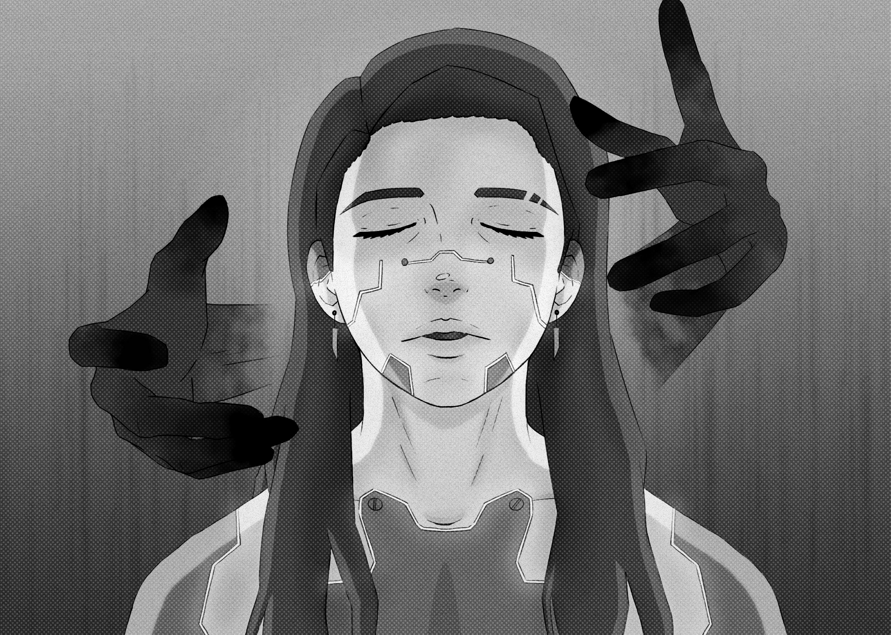
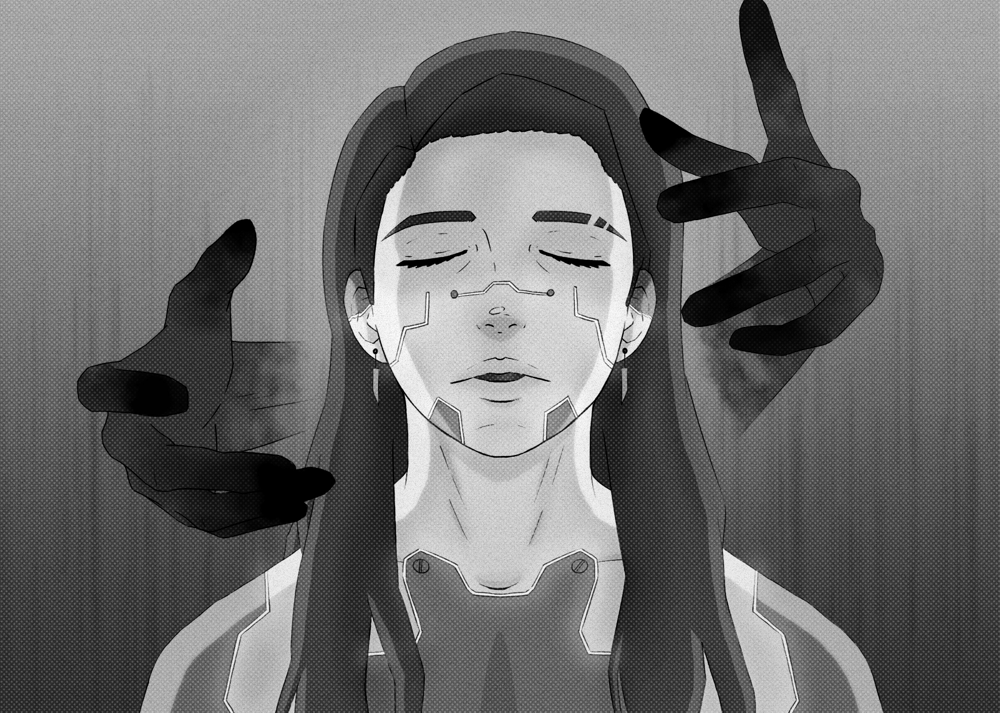

2022
Etant fan du genre cyberpunk, c'est pour moi un style que j'apprécie utiliser dans diverses créations et dessin, l'univers cyberpunk permet de créer une infinité et des personnages cyborg avec beaucoup de détails morphologiques, tout en réfléchissant l'histoire et l'appartenance d'un personnage par les implants cybernétiques qui se trouvent sur son corps.
 

Je réalise tous mes dessins sur Photoshop en utilisant une tablette graphique, l'effet de trame est lui aussi fait sur Photoshop.